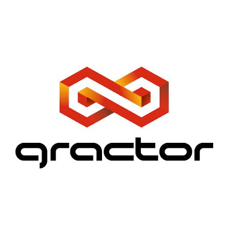

AI/ML Engineer
NowGractor
Sep 2025 – Present · Seoul, Korea
- Built hybrid retrieval for utility-operations data, combining lexical/vector retrieval, reranking and knowledge-graph reasoning to produce evidence-backed answers; evaluated retrieval quality on a held-out set.
- Developed a read-only, tool-calling operations agent for water-grid workflows, with guardrails at tool boundaries and an adversarial-input evaluation harness.
- Implemented multi-provider LLM routing with circuit-breaker failover; deployed YOLOv5/OpenVINO detection to municipal camera hardware with MQTT/serial integration and offline-first recovery.
- Hardened a live road-infrastructure digital twin using Three.js and PostGIS, taking a prototype toward certification.